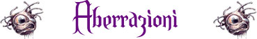
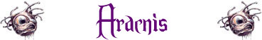
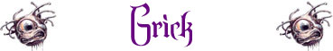
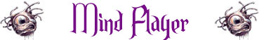
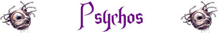

Il miglior modo di introdurre queste creature ai prodi avventurieri areliani è senza dubbio quello di leggere alcuni passi del più famoso tomo scritto da Ìphegor, Anziano Maestro della Saggia Amministrazione di Glen, principale studioso e teorico delle aberrazioni vissuto nell'Impero del Nordor intorno al 300 a.n..
Nel suo Codex Anathema, infatti, il saggio Ìphegor era solito descrivere queste creature nel seguente modo: "le aberrazioni sono mostruosità bizzarre, esseri antidiluviani, creature tentacolari o dai molteplici occhi che vagano nelle profondità del sottosuolo od in zone remote della terra. Sono creature la cui stessa esistenza oltraggia l'armonia della natura".
Non esiste una caratteristica principale od un segno distintivo comune a queste creature che possa essere utilizzato per distinguerle dagli altri esseri viventi. Alcune sono intelligenti, altre animalesche, alcune hanno forma umanoide, altre mostruosa, alcune formano strutture sociali assai complesse, altre vivono solitarie vagando tra antiche rovine e cavità sotterranee...
La fondamentale scoperta che Ìphegor fece nel corso dei suoi studi fu quella di dimostrare che le aberrazioni sebbene possono essere ormai considerate creature viventi areliane del Primo Piano Materiale non hanno la loro origine su questa terra. Nessuna linea evolutiva, infatti, congiunge queste creature con gli altri essere viventi del mondo di Arelia. Le loro origini restano un mistero che si perde nel tempo e nello spazio. La teoria formulata da Ìphegor, allo stato accettata dalla maggior parte degli studiosi, è che le aberrazioni sono creature di altri mondi che si sono trasferite nelle terre areliane per finalità e con modalità che restano ancora oggi un mistero.
Quello che è certo, in realtà, è che non tutte le aberrazioni hanno la medesima origine. Anzi, le varie aberrazioni conosciute appaiono avere origini assai diverse. Le origini di alcune sono legate all'esistenza di esseri divini, altre sono il risultato di mutazioni provocate da radiazioni magiche, altre ancora potrebbero esseri originari di altri mondi. In conclusione, l'unico tratto distintivo comune di queste creature è rappresentato proprio dalla loro estraneità alla linea evolutiva di tutte le altre creature areliane.
Nonostante, come spiega
chiaramente Ìphegor nel Codex Anathema, le
aberrazioni rappresentino creature assai diverse l'una dall'altra, esistono
alcune caratteristiche che in diverse occasioni le contraddistinguono. Si tratta
delle seguenti caratteristiche:
Genialità Sinistra:
Le aberrazioni appartenenti a razze dominanti (quali ad esempio Aboleths,
Beholders, Globulus e Mind Flayers) sono creature estremamente intelligenti, dotate di
grande forza di volontà e capacità percettive. Solo gli umani ed i semi-umani
più intelligenti, ad esempio, possono competere con la mente di queste creature.
Oltre ad essere estremamente intelligenti queste creature hanno accumulato
un'incredibile conoscenza. La logica che le contraddistingue è però diversa da
quella comune. Questi esseri hanno processi logici e mentali alieni ed in alcuni
casi la loro mente ed i loro ricordi possono divenire addirittura collettivi.
Queste creature sono quasi sempre molto pianificatrici e subdole. Queste
capacità mentali consentono a queste creature di soggiogare esseri meno
intelligenti ma brutali quali sono solitamente gli umanoidi e perfino alcuni
giganti che utilizzano come guardiani e servitori. Queste creature amano ordire
piani malvagi restando nascoste nelle ombre mentre creature inferiori svolgono
il lavoro sporco per loro.
Avversione alla Natura: In quanto creature aliene, le aberrazioni non hanno un posto delineato nell'ambito dell'ecosistema naturale. Sono esseri invasori che sfruttano l'ecosistema e le creature che lo abitano a loro unico vantaggio. Questi esseri, infatti, non possono essere definiti come comuni predatori rappresentando un affronto a tutto ciò che la natura rappresenta. Non facendo parte della catena alimentare, la loro presenza può comportare la distruzione dell'habitat naturale e la morte della fauna e della flora locale. In quanto esseri corruttori del mondo naturale le aberrazioni sono odiate dai druidi e da tutti gli esseri che hanno uno stretto legale con la natura (si pensi anche agli elfi alti fedeli di Arlinir).
Inumanità del Pensiero: Le aberrazioni non possono essere semplicemente definite creature malvagie. Le loro condotte e le conseguenze di tali condotte possono certamente equipararsi ad atti intrisi di cattiveria e malvagità ma, in realtà, la logica del loro pensiero non concepisce i canoni umani di moralità o decenza. Per un Mind Flayer, ad esempio, le nozioni di bene e di male sono semplicemente relativistiche, determinate solo in ragione di sé stesse ed in ultima analisi rappresentano inutili tentativi di giustificare l'utilizzo della forza e della superiorità di una creature su un'altra. Il pensiero di queste creature può essere definito come estremamente logico, freddo, cinico e contraddistinto da un'inumana assenza di moralità e sentimento. In ogni caso le aberrazioni si ritengono esseri nettamente superiori alle altre razze areliane. Questa superiorità da loro il diritto di sfruttare, soggiogare od eliminare le altre creature inferiori.
Da un punto di vista anatomico, le aberrazioni sono creature che, sebbene contraddistinte da un corpo di tipo organico, sono dotate di un'anatomia estremamente inconsueta, parzialmente aliena rispetto a quella delle altre creature che vivono nel primo piano materiale. Queste creature sviluppano inoltre caratteristiche strane e poteri peculiari che non è possibile riscontrare nelle altre categorie di comuni creature.
Essendo creature dotate di un corpo di tipo organico le stesse hanno bisogno di nutrirsi, respirare e riposare.
Per la particolare morfologia del loro corpo, caratterizzato da organi atipici e posizionati in zone diverse rispetto alle normali creature, contro questi esseri non possono essere utilizzate le capacità, i colpi di combattimento, le arti di combattimento ed i poteri che richiedono la conoscenza della posizione degli organi vitali (si pensi, ad esempio, ai colpi di combattimento quali Causare Grande Dolore, Taglio Profondo, Attacco Letale; all'abilità dei ladri Lethal Attack; alle arti di combattimento come l'Arte del Combattimento Letale e l'Arte di Ferire Gravemente). Per poter utilizzare tali abilità, infatti, occorre che il personaggio abbia conoscenza della particolare morfologia di queste creature avendo acquisito la competenza non relativa alle armi Aberration Lore.
|
 |
 |
 |
|
 |
 |
 |
|
 |
 |
|
 |